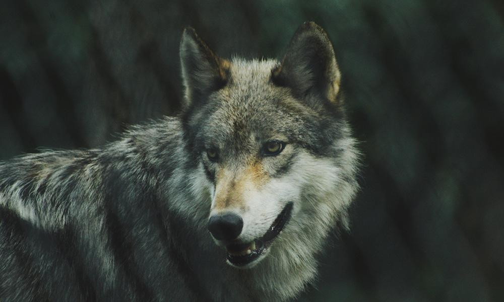

WOLVES
O lobo é uma espécie de mamífero canídeo do gênero Canis, da família dos cães e raposas. É um sobrevivente da Era do Gelo, originário do Pleistoceno Superior, cerca de 300 mil anos atrás. Os lobos são capazes de percorrer longas distâncias com uma velocidade média de 10 quilômetros por hora e são conhecidos por atingir velocidades próximas a 65 quilômetros por hora durante uma perseguição.[13]

